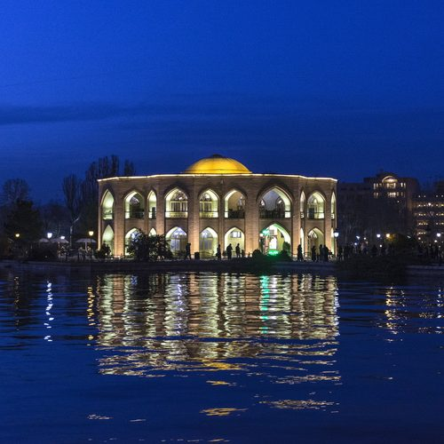
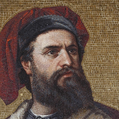
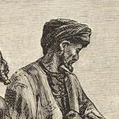

Eight centuries of empires, merchants, poets and reformers in north-western Iran.

Tabriz is the largest city in north-western Iran and the capital of East Azerbaijan Province. It lies in a high valley between the Eynali range and Mount Sahand, about 1,350 metres above sea level, and is home to more than 1.5 million people.
For centuries it was one of the great capitals of the Persian world. It was the seat of the Ilkhanate from 1265, then of the Qara Qoyunlu and Aq Qoyunlu, and in 1501 it became the first capital of the Safavid dynasty. Under the Qajars it was the residence of the crown prince.
Tabriz calls itself the “City of Firsts”. It is credited with many of Iran's modern firsts, including Roshdieh's pioneering modern school, an early printing house and the country's first public library. It was also a centre of the Constitutional Revolution of 1905–1911.
Tabriz has a cold semi-arid climate with four distinct seasons. Winters are cold and often snowy, while summers are warm, dry and sunny. The city receives only about 258 mm of precipitation a year, most of it in spring. Spring and early autumn are the most pleasant times to visit, when the parks of El Goli and Eynali are green and the bazaar lanes stay cool. Pack warm layers from November to March, when daytime highs hover just above freezing.
Bars show the average daily high for each month, 1991–2020.
From Silk Road trading halls to lakeside pavilions, six ways to get to know Tabriz.
A UNESCO World Heritage Site since 2010 and a great Silk Road market of brick-vaulted lanes, domed halls and caravanserais.
A main centre of Iranian rug weaving, named a World Carpet Weaving City by the World Crafts Council in 2015.
The turquoise tiles of the 15th-century Blue Mosque, the brick walls of the Arg and the Constitution House.
Tabriz köfte, giant meatballs of meat, rice and leeks, plus dolma and sweets such as qurabiya and lovuez.
The lake pavilion of El Goli, the Eynali forest park and Kandovan, a village carved into volcanic rock.
The Mausoleum of Poets and the house of Shahriar, the beloved 20th-century poet born in Tabriz.
Six places that tell the story of Tabriz, from Ilkhanid ramparts to volcanic cliff dwellings.

“Tauris is a great and noble city… The men of Tauris get their living by trade and handicrafts, for they weave many kinds of beautiful and valuable stuffs of silk and gold.”

“I passed through the jewellers’ bazaar, and my eyes were dazzled by the varieties of precious stones that I beheld.”
“Tabriz is indeed a very mighty city rich in goods and abounding in wealth, for commerce daily flourishes here.”
Tabriz is “the second city in Persia in dignity, grandeur, riches, trade, and number of inhabitants,” with “the fairest Basars that are in any place of Asia.”
Practical details for travellers heading to Tabriz.
Tabriz International Airport connects the city with Tehran and regional destinations, and Tabriz is the main road and rail hub of north-western Iran. Spring and early autumn bring the mildest weather.
Tabriz, East Azerbaijan Province, Iran
Tabriz International Airport (TBZ)
Iran Standard Time (UTC+3:30)